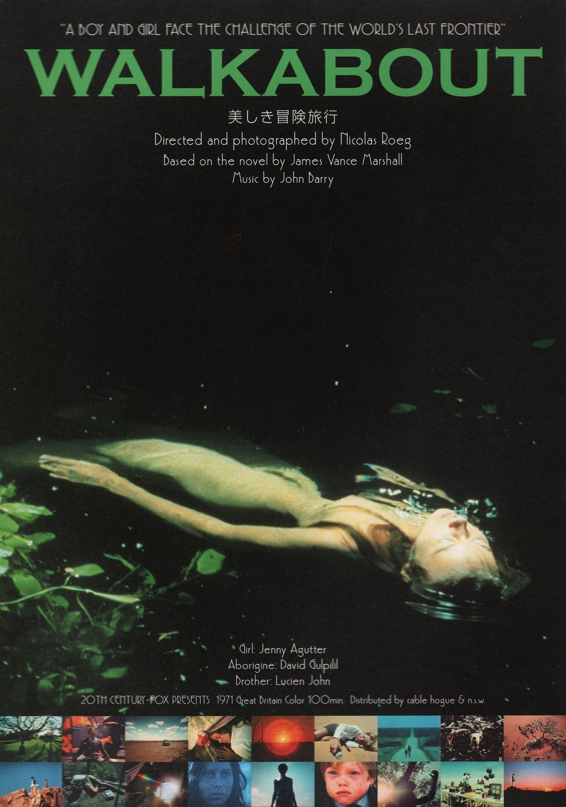
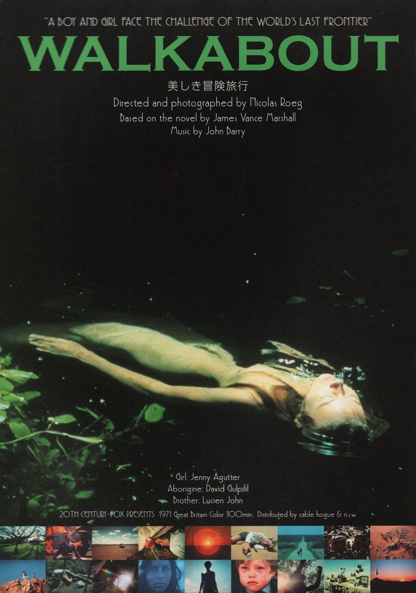

I want to set the mood with some beautiful scores from two of the best and earliest Australian New Wave films, both from English composers. Both Walkabout and Wake in Fright released in 1971 which is my favourite year of film releases.
Walkabout was scored by none other than John Barry, the composer of the original James Bond theme for Dr. No, as well as composing the scores of 11 Bond films including legendary entries to the series such as Goldfinger, Thunderball, You Only Live Twice, and Diamonds Are Forever.
Here is his main theme for Walkabout (1971):


 


 Quick Updates
Quick Updates Movies
Movies Television
Television Books
Books Taoisms
Taoisms Judaisms
Judaisms Snacks
Snacks Travel
Travel